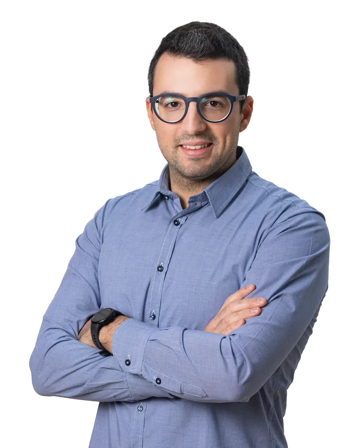

Founder & product lead · 2026
Luca Bertaggia
Progetto software e lo costruisco con l'IA: processi ripetitivi che diventano automatici.
whoami
costruisco software che fa il lavoro noioso al posto delle persone
dove
Torino. E un server acceso h24.
a-cosa-lavori-adesso
a fid.ai: insegno a una segreteria a rispondere ai clienti da sola
01Chi sono
Chi sono
Vengo dal mondo accademico, dove ho iniziato ad automatizzare con l'IA i processi amministrativi più noiosi. Adesso sono founder e product lead di fid.ai e socio di Dotspace.
Lavoro sui processi che le persone ripetono a mano: li smonto e li rimonto in flussi automatici. Sull'AI costruisco pipeline RAG e orchestrazione di modelli, ma con una persona che valida quando la posta in gioco è alta. Sicurezza, permessi e dati personali me li guardo prima, non dopo. Scrivo e parlo italiano, spagnolo e inglese.

02Percorso
Percorso
Dove ho studiato, dove ho lavorato e dove ho iniziato a costruire software.
-
2016 — 2022
Scienze motorie, fra Torino e Almería
Triennale e magistrale all'Università di Torino (110/110 e 105/110 con dignità di stampa), due Erasmus+ alla Universidad de Almería e una ricerca sul benessere dopo la pandemia, presentata al Convegno SIPI di Padova.
-
2023 — oggi
Ufficio tirocini, Università di Torino
Oltre 600 enti convenzionati da tenere in ordine. Invece di farlo a mano costruisco i primi automatismi con l'IA: moduli, controlli e archivi cominciano a gestirsi da soli.
-
2025 — oggi
fid.ai e Dotspace
Fondo fid.ai, la segreteria che risponde ai clienti su WhatsApp: dall'idea al server. E divento socio di Dotspace insieme a tre sviluppatori.
-
2026
Universidad de Concepción, Cile
Borsa dell'Università di Torino per studiare come gestiscono i tirocini dall'altra parte del mondo, e un prototipo per far incontrare studenti e aziende. Intanto studio informatica.
03Cosa costruisco
Cosa costruisco
Progetti che porto avanti, dall'idea al server.
fid.ai
La tua segreteria digitale e intelligente: gestisce per te le richieste di tutti i tuoi clienti.
fidai.it ->Facilitazione d'aula
Progetto e conduco i webinar di formazione manageriale di Towers Watson Italia e Challenge Network: due ore, duecento persone collegate. Cloud, metodi agili, leadership, trasformazione digitale.
WTW · Challenge NetworkFormazione IA a scuola
Trenta ore per i docenti dell'IC Inzago, primaria e secondaria di primo grado: quindici incontri e un kit di attività pronte da usare in classe.
IC Inzago · 30 oreDotspace
L'azienda di cui sono socio insieme a tre sviluppatori: software su misura per aziende e professionisti. Nata da poco.
Software su misura · 4 soci04Scrivimi
Scrivimi
Il modo più diretto è la posta. Rispondo a tutto quello che non è una proposta di link building.